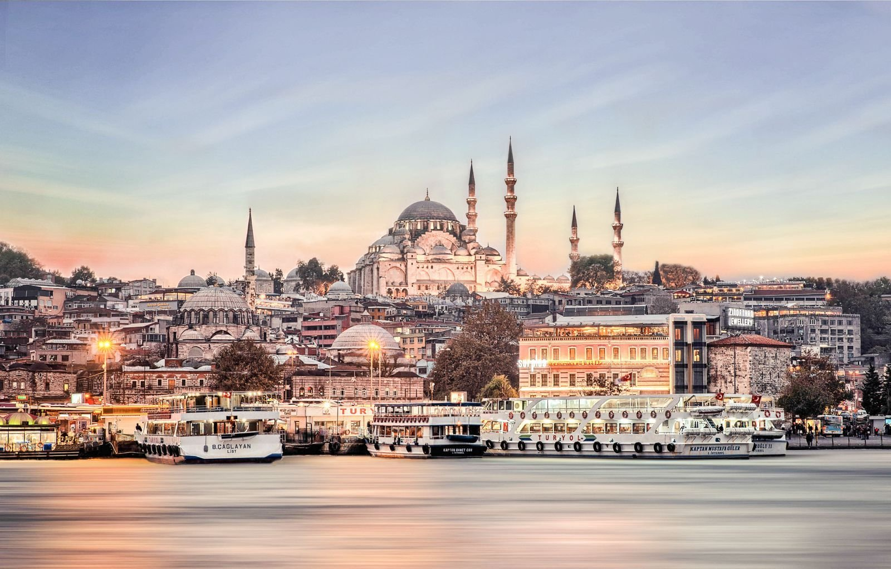
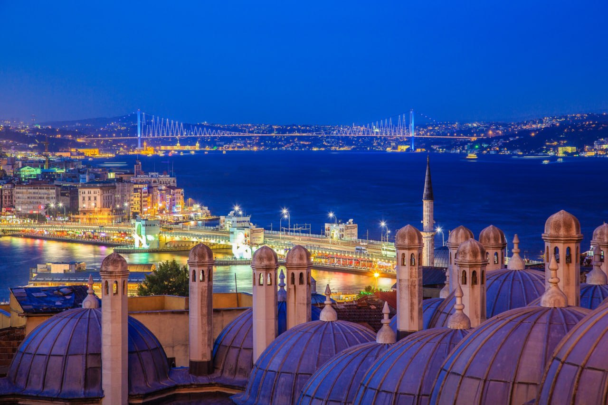
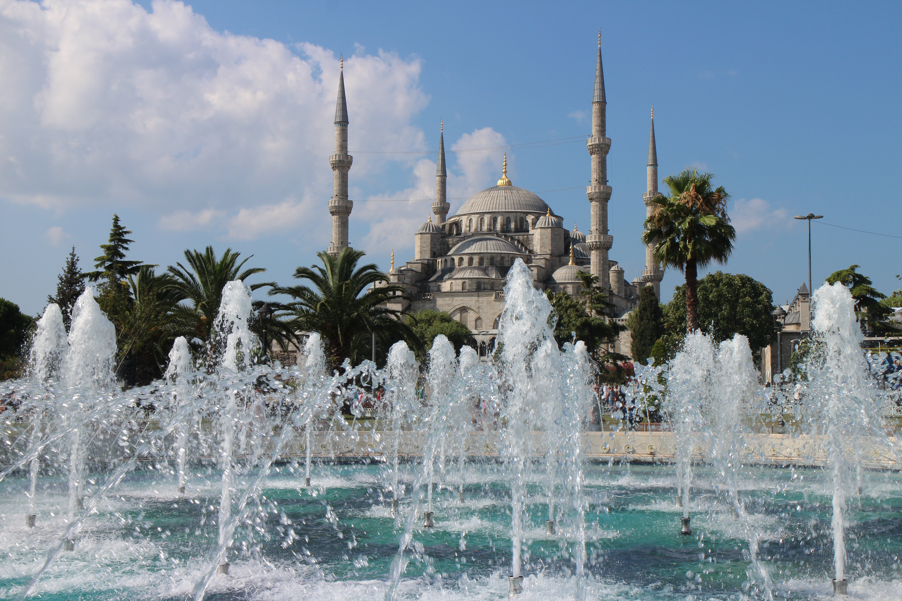
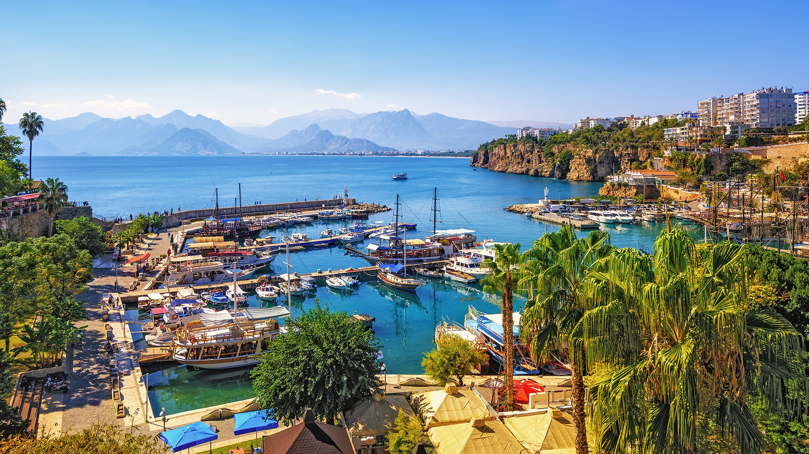

День 1: Исторический полуостров
- 9:00-10:30: Мечеть Султана Ахмета
- 11:00-12:30: Мечеть Святой Софии
- 13:00-14:00: Цистерна Базилика
- 14:30-16:00: Гульхане Парк
- 16:30-17:30: Кукурузный базар Эминёню
- 18:00-19:30: Археологический музей
- 20:00-21:30: Сулеймания

День 2: Азиатский сайд-тур
- 9:00-10:30: Девичья башня
- 11:00-12:30: Камлика Хилл
- 13:00-14:00: Квадратный квадрат
- 14:30-16:00: Мечеть Ускюдар
- 16:30-17:30: Бейкозская роща

День 3: Европейский боковой тур
- 9:00-10:30: Дворец Долмабахче
- 11:00-12:30: Крепость Румели
- 13:00-14:00: Галатская башня
- 14:30-16:00: Ортакойская мечеть
- 16:30-17:30: Звездный парк
- 18:00-19:00: Истинье парк
- 19:30-21:00: Зорлу центр

День 4:Посещение
- 9:00-10:30: Цвет морской волны
- 11:00-12:30: Ататюркский лес
- 13:00-14:00: Социальные объекты Флория
- 14:30-16:00: Атакой Марина
- 16:30-18:00: Пляж Есилькой
День 5:Короткий день
- 9:00-10:30: Гранд Базар
- 11:00-13:00: Вечерний круиз по Босфору (за дополнительную плату)